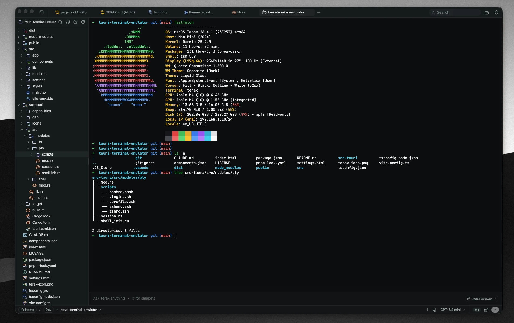
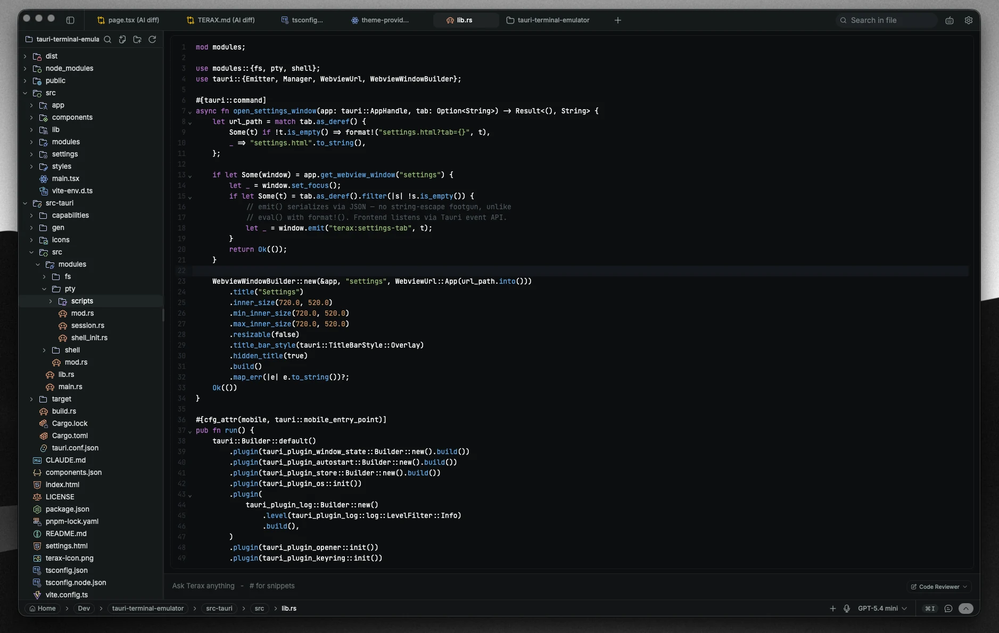
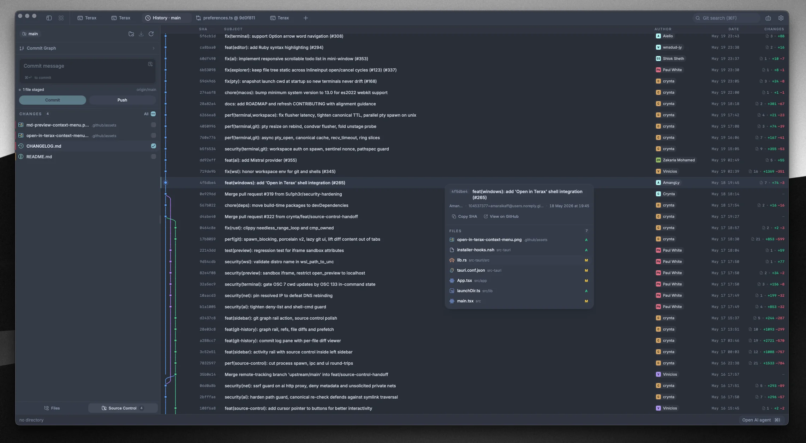
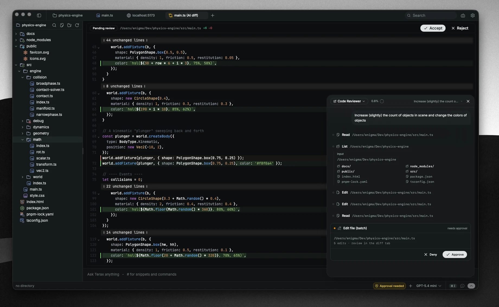
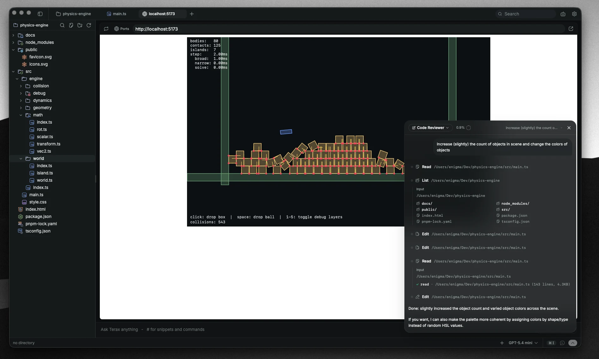
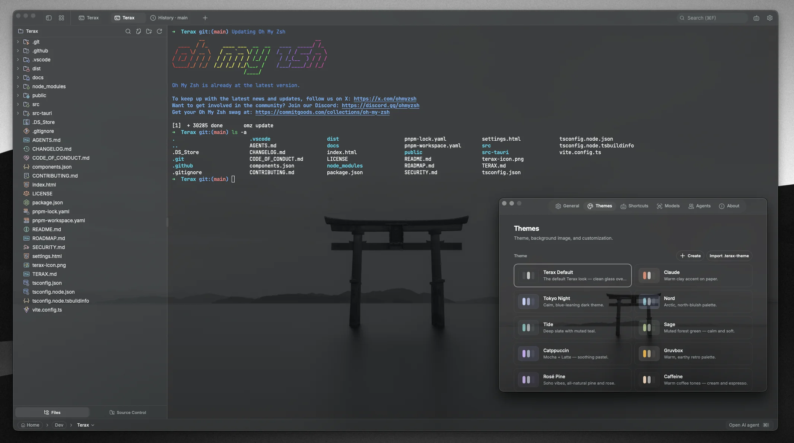

The AI-native
dev workspace|
A lightweight AI terminal with a built-in editor, autonomous AI agents, voice input, and live web preview. Under 10 MB on disk. 300 ms cold start. Bring Your Own Key (BYOK) or run fully local.
See ZyperCode in action.
Terminal, code editor, AI agents, and live web preview — harmonized in one unified pane.

A terminal you'll actually want to live in.
xterm.js with a WebGL renderer, multi-tab, and a file explorer with Catppuccin icons. Keyboard-first, silky smooth, and instantly fast.
- WebGL-rendered xterm.js — silky at any scrollback length
- Multi-tab terminals, editors, and web previews side-by-side
- File explorer with Catppuccin file icons + swift keyboard nav
- Project-wide search at ripgrep speed
An editor with real Vim mode and AI autocomplete.
Built-in editor with context-aware completions, first-class Vim emulation, and 20+ prebuilt themes. Zero language-server configuration required — it just works.
- Context-aware AI autocomplete inline as you type
- Real Vim mode (motions, registers, marks, visual block)
- Catppuccin, Tokyo Night, Dracula, and 20+ designer palettes
- Sub-millisecond keystroke latency with CodeMirror engine

Git, with a visual graph that finally makes sense.
Stage hunks, commit with a single shortcut, and inspect history through a visual interactive commit graph — all without leaving your tab.
- Hunk-level stage / unstage / discard with diff view
- Commit with Cmd/Ctrl+Enter, push with upstream awareness
- Interactive commit graph with branch lines, merges, and tags
- Search commits and instantly jump to GitHub commit diffs

Agents that read, plan, and ship diffs.
Multi-agents and sub-agents browse files, run commands, and propose code updates — every edit lands in an interactive, reviewable diff before it touches disk.
- AI Edit Diffs — review and accept/reject every change inline
- ZYPER.md memory + per-project instruction rules in your repo
- Bring Your Own Key (BYOK) or fully local offline models via LM Studio
- Voice input — talk to your AI agent hands-free while you code

Preview your app without leaving the shell.
Automatically detects running local dev servers — Vite, Next.js, Astro, Remix, or Python — and mounts them as a live tab directly beside your editor.
- Auto-detect Vite, Next, Astro, and local web servers
- Embedded live preview tab beside your code
- Plans, tasks, and markdown preview tracked in-app
- Hot-reload reflection at the speed of your dev runtime

Make it yours, down to the last pixel.
Choose from curated editor themes, app palettes, or create your own custom theme in-app with custom background images, adjustable opacity, and blur.
- Bundled: zypercode-default, nord, tokyo-night, catppuccin, gruvbox, rose-pine, sage, claude
- Background image with opacity + Gaussian blur sliders
- Build custom themes, export and share JSON
- Editor theme pairs independently from the app chrome

More built in. No plugins required.
Everything you need to write, debug, test, and ship code at lightspeed.
Voice Input
Talk directly to your terminal. Dictate instructions and chat with agents via Groq Whisper or local speech models.
Local LLMs
Run fully offline through LM Studio, Ollama, or MLX. Your code and prompts never leave your local hardware.
AI Autocomplete
High-speed speculative autocomplete directly in the editor powered by Cerebras, OpenRouter, or local models.
ZYPER.md Memory
Per-project persistent context and instructions stored right inside your git repository for perfect consistency.
Plans & Tasks
Break complex coding initiatives into verified, tracked steps. Agents pick up right where you left off.
Prebuilt Themes
Kanagawa, Catppuccin, Tokyo Night, Dracula, and Gruvbox ready to go out of the box with custom font scaling.
Multi-Tab Splits
Terminals, editors, git graphs, and live web previews arranged flexibly with intuitive pane navigation.
Ripgrep Search
Blazingly fast text and regex search across thousands of files, with instantaneous jump-to-definition.
Inline AI Diff Staging
Review every AI-generated change side-by-side. Accept or reject modifications before they touch disk.
First-Class Vim
Full modal editing support built in. Navigate, edit, and command using standard Vim motions and registers.
BYOK Security Gate
Bring your own API key. Encrypted securely in the local OS keychain (Windows Credential Manager) — zero plaintext storage.
Opt-in Extensions
VS Code-style extension support for Python, Tailwind CSS, Prettier, ESLint, and Rust Analyzer. Toggleable from Settings.
Pick a build. Run it.
No account required. Zero telemetry. Official verified release builds published on GitHub.
ZyperCode for Windows (x64)
Features the all-new Bring Your Own Key (BYOK) setup flow, opt-in extensions support, dual-channel auto-update fetch, and zero-CORS multi-provider AI engine.
Questions, answered.
Still curious? Open an issue or discussion on GitHub — we read everything.